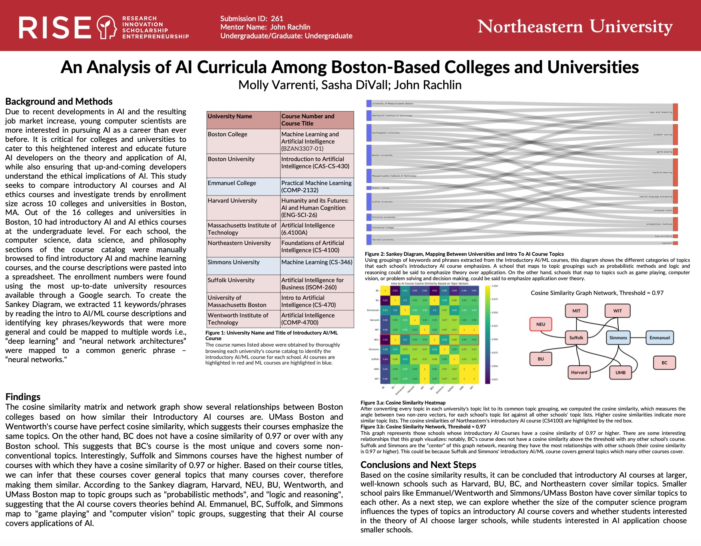

An Analysis of AI Curricula Among Boston-Based Colleges and Universities (Boston, MA, Spring 2025)
• Below you will see a research project that I recently completed alongside my peer Sasha DiVall, and our Professor, Dr. John Rachlin. This project was a semester long effort that will be presented on April 11th
The Rhetoric Behind University Mission Statements (Boston, MA, Spring 2024)
• Below you will see a research project that I completed in the spring of 2024 alongside my peer Andrew Klaey for our Advanced Programming with Data class (python). This project was a month long effort that was presented in class to our peers discussing colleges in Boston and their mission statements